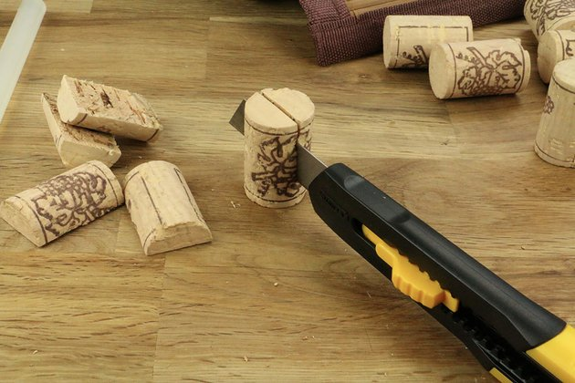
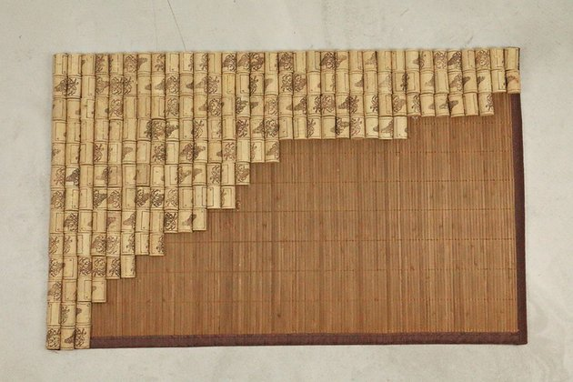

Description
Et pourquoi ne pas conserver vos bouchons en liège ? Les amateurs de vin, ou autre collectionneur de bouchons, vont pouvoir user de leur collections pour fabriquer ce tapis original. Rassurez-vous, vous pouvez bien évidemment en acheter en grande surface très facilement.
Ce tapis peut être parfait pour un tapis de bain, mais peut être aussi utilisé comme simple accessoire de décoration. Il peut être de plus réincarné en cadre où vous pouvez accrocher vos photos préférées. Libre à vos imaginations pour ses différentes utilisations.
Durée : 2h30
Compétence bricolo :
Matériel
- Un tapis de bain (avec une des faces antidérapante)
- Des bouchons en liège (200 bouchons pour un tapis de 70x50 cm
- Un pistolet à colle
- Un cutter
Budget : environ 10 euros
Étapes
1 Couper les bouchons Réaliser cette étape soigneusement pour un résultat harmonieux
Commencez par couper en deux les bouchons dans le sens de la longueur avec le cutter. Il est préférable de porter des gants de travail afin de ne pas vous blesser.
Pour un résultat uniforme, essayez de couper l'ensemble des bouchons du même côté. Pour cela, il faut bien sûr que vos bouchons aient tous le même motif.
2 Positionner et coller Coller les bouchons en les disposant harmonieusement
Placez le tapis de bain sur un plan de travail en mettant la face antidérapante sur le dessous. Vous pouvez ensuite commencer à coller les demi bouchons un à un à l'aide du pistolet à colle. Alternez entre des lignes et des colonnes afin de ne pas créer de décalage.
Collez tous les bouchons de la même façon. Au final vous obtenez un joli tapis fait-maison, d'un style très original et agréable au pied. Très ludique, vous pouvez facilement réaliser ce tutoriel avec des enfants, en restant très prudent avec le pistolet à colle.